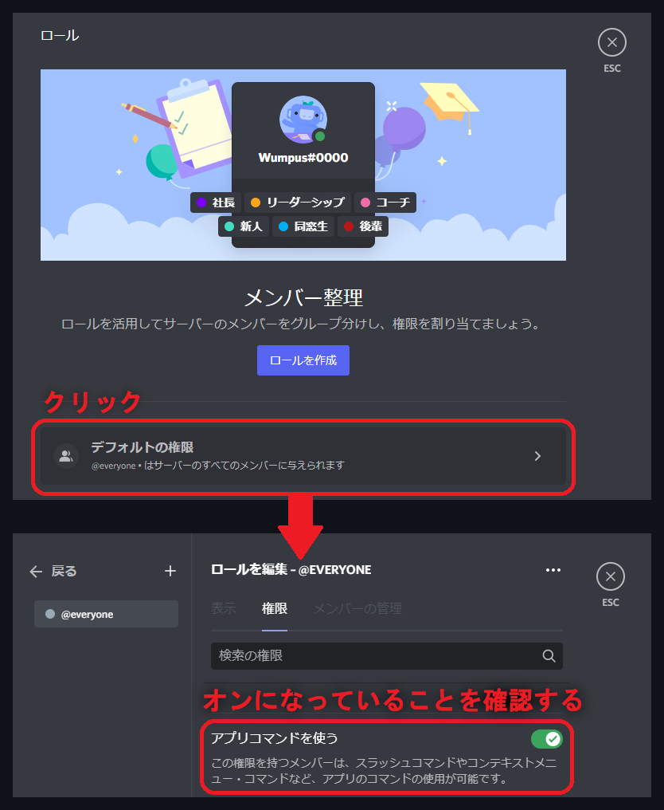
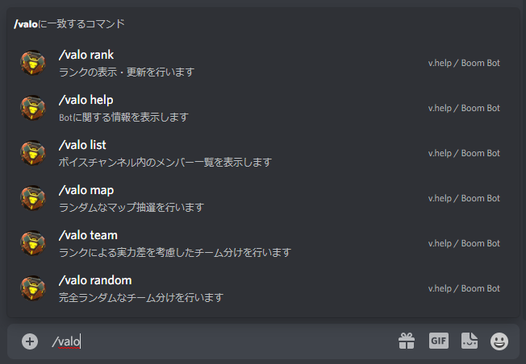
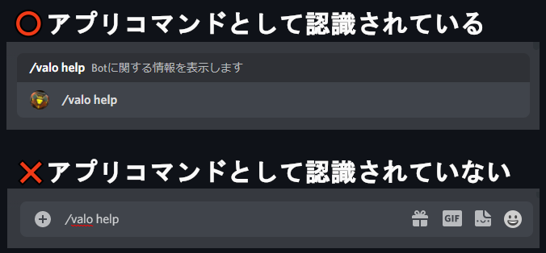

v2への移行
v1からv2の移行によっていくつか動作要件や使用方法などが変更されました。
使用を継続する場合には下記のすべての手順に従って、セットアップを行ってください。
Step1. BoomBotの再招待
公式WEBページから再招待を行ってください。
Step2. ユーザーへ権限の付与
@everyoneに対して『アプリコマンドを使う』の権限を付与してください。

※注意点
@everyoneより上位の『アプリコマンドを使う』がオフになっている権限がメンバーに付与されていた場合
そのメンバーはBotコマンドを使用することができません。
Step3. Botが使用できるか確認を行う
/valoと入力した時点で候補が表示されるか確認してください。

候補が表示されない場合は？
Step1の再招待を行っていない、もしくはStep2の手順が正しく行われていない可能性が高いです。
公式WEBページから再招待を行うこと
『アプリコマンドを使う』がオフになっている権限を”メンバー”に付与しないこと
|
コマンドの使用方法が正しくないことも考えられます。
v2への移行によりコマンドの形式が変更されています。
コマンド使用の際にドットが不要になりました。
./valo(旧) →/valo(新)
|
Step4. 実行する
/valo helpを入力、または選択して動作するかを確認してください。

どうしても動かないときは？
Twitterでのリプライ、またはDMで@카후に直接サポートを求めてください。